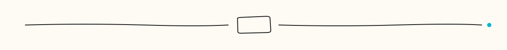
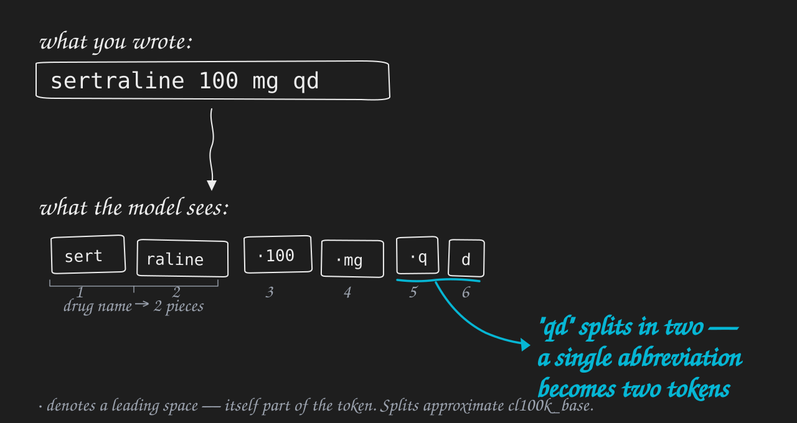
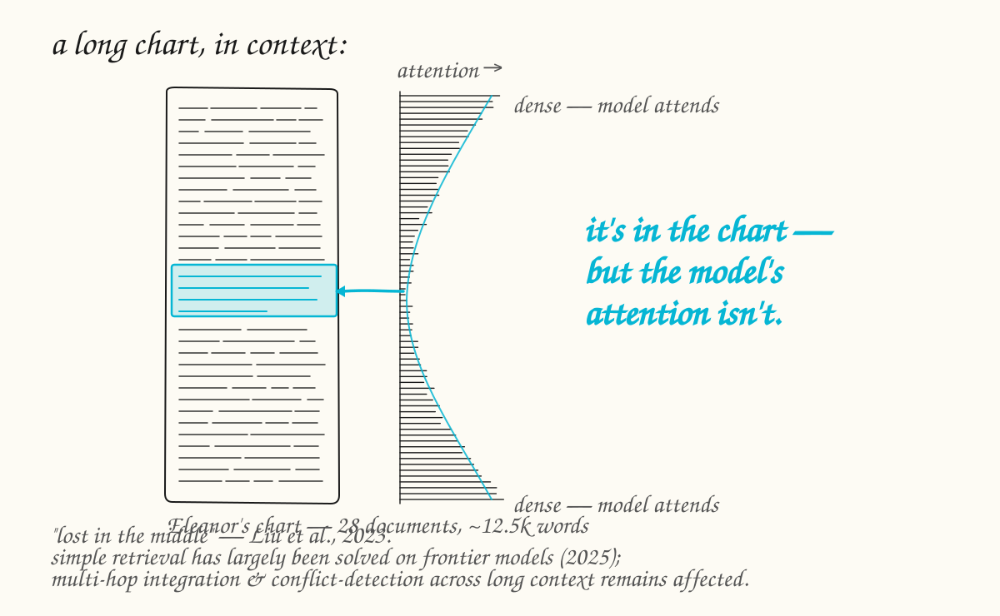

About this talk
This talk introduces the fundamentals of large language models — tokenization, positional encoding, context windows, retrieval-augmented generation, schema-constrained extraction — to a clinical and translational psychiatry audience. The point is not an ML crash course. The point is a sturdy enough mental model to evaluate vendor claims and reason about when LLMs are (and aren't) safe to use for a given task.
Two notebooks run live during the talk, and remain here for anyone to re-run themselves. Both use a synthetic 28-document psychiatric chart and a small open-access ketamine/TRD literature corpus — no real patient data, even de-identified.
This is Session 1 of the series. The next talk picks up with attention and the transformer architecture proper.

Notebooks
How LLMs see clinical text
Three mental models — tokenization, positional encoding, and context windows — that determine what an LLM can and can't do with a clinical note. Live tokenization of a clinical sentence; same fact in four formats; the "lost in the middle" failure mode demonstrated on a 12,500-word synthetic chart with a buried SSRI contraindication.

Using LLMs for psychiatric research
Three workhorse capabilities and four failure modes. RAG on a real ketamine/TRD literature corpus shows what hallucinated-citation failures look like and how grounding fixes them. Schema-constrained extraction turns a free-text H&P into a parseable JSON object. Then four named failure modes — hallucination, lost-in-the-middle, PHI leakage, prompt injection — paired with the mitigations that actually work.

Setup
No API key. No account. No install. The notebooks run Microsoft Phi-3.5 mini Instruct (3.8B parameters, 128K context) locally on Colab's free GPU.
- Click Open in Colab on either notebook above.
- In Colab, go to Runtime → Change runtime type → T4 GPU if it's not already selected.
- Run all cells. The first cell downloads the model (~2.3 GB at 4-bit, takes 1–2 minutes); everything after that is fast.
Why a small open-source model rather than GPT or Claude? Because the failure modes we want to demonstrate — lost-in-the-middle, hallucinated citations, schema slop, prompt injection — are mechanisms baked into the transformer architecture. They're present at every scale; frontier models hide them intermittently, not structurally. Running a small model locally makes the demos reliable, the setup zero, and the lessons just as transferable.
References
Mechanisms cited in NB1
- Liu et al. 2023 — Lost in the Middle: How Language Models Use Long Contexts.
- Pagnoni et al. 2024 — Byte Latent Transformer: Patches Scale Better Than Tokens.
- Hwang et al. 2025 — H-Net: Hierarchical Network Compression via End-to-End Hierarchical Tokenization.
RAG corpus (NB2)
- Berman RM, et al. 2000. Antidepressant effects of ketamine in depressed patients. Biol Psychiatry 47(4):351–354.
- Zarate CA, et al. 2006. A randomized trial of an N-methyl-D-aspartate antagonist in treatment-resistant major depression. Arch Gen Psychiatry 63(8):856–864.
- Murrough JW, et al. 2013. Antidepressant efficacy of ketamine in treatment-resistant major depression: a two-site randomized controlled trial. Am J Psychiatry 170(10):1134–1142.
- Daly EJ, et al. 2018. Efficacy and safety of intranasal esketamine adjunctive to oral antidepressant therapy in treatment-resistant depression: a randomized clinical trial. JAMA Psychiatry 75(2):139–148.
- McIntyre RS, et al. 2021. Synthesizing the evidence for ketamine and esketamine in treatment-resistant depression. Am J Psychiatry 178(5):383–399.
Aesthetic reference
- Cosyne 2025 — Transformers in Neuroscience Tutorial. Format and visual feel adapted from this excellent tutorial site.